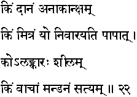
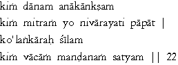

|

|
Verse 22 - Meaning:
Q: What is a gift ?(kim daanam)
A: That which is presented without being asked for.
Q: Who is one's true well-wisher ? (kim mitram)
A: That one (yo)who wards him away from committing sins. (nivaarayati paapaat)
Q: What is the best decoration (that a person can have)? (ko alankaarah)
A: A character without a blemish. (silam)
Q: What embellishes one's speech ? (kim vachanam mandanam)
A: Truth.(satyam)
|